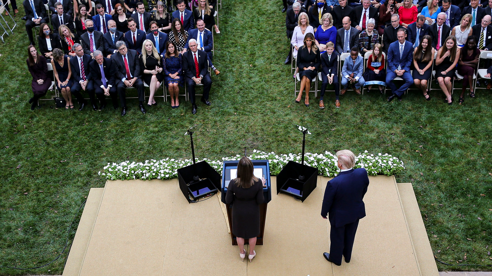
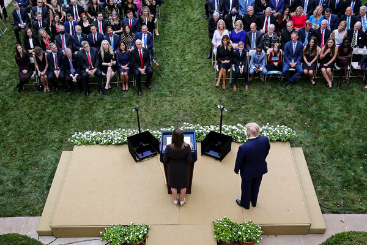
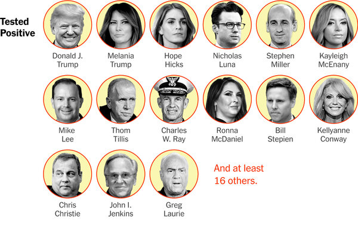
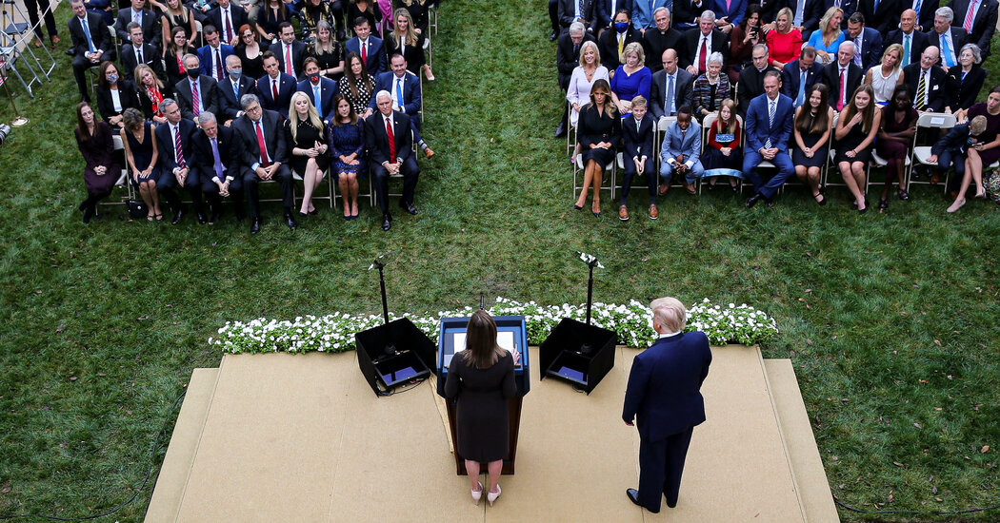
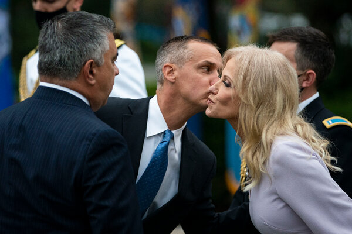

White House Is Not Tracing Contacts for ‘Super-Spreader’ Rose Garden Event



Despite almost daily disclosures of new coronavirus infections among President Trump’s close associates, the White House is making little effort to investigate the scope and source of its outbreak.
The White House has decided not to trace the contacts of guests and staff members at the Rose Garden celebration 10 days ago for Judge Amy Coney Barrett, where at least eight people, including the president, may have become infected, according to a White House official familiar with the plans.
Instead, it has limited its efforts to notifying people who came in close contact with Mr. Trump in the two days before his Covid diagnosis Thursday evening.It has also cut the Centers for Disease Control and Prevention, which has the government’s most extensive knowledge and resources for contact tracing, out of the process.
Contact tracing is an essential piece of any outbreak investigation and is a key to stopping the virus from spreading further, especially after a potential 'super spreader' event where many people may have been infected.
Any of the closely packed guests and staff members at the Rose Garden ceremony could have gone on to transmit the virus to many others, so the White House’s decision not to investigate the cluster of infections, and pinpoint the source, has potentially devastating consequences for hundreds of people, several experts warned.
'This is a total abdication of responsibility by the Trump administration,' said Dr.Joshua Barocas, a public health expert at Boston University, who has advised the City of Boston on contact tracing.'The idea that we’re not involving the C.D.C. to do contact tracing at this point seems like a massive public health threat.'
The White House official, who declined to be identified because he was not authorized to speak about the matter, said that the administration was following C.D.C. guidelines that recommend focusing on contacts within a two-day window from diagnosis.But public health experts said it was irresponsible to ignore the earlier gathering at the Rose Garden.
'You cannot argue against the fact that five or six people who attended that event all got infected, unless you argue that that was all random chance,' said Dr. Yvonne Maldonado, an epidemiologist and contact tracing expert.'There were a lot of people working at that event, and so they need to be contact tracing that whole event.'
Even the contact tracing efforts within the two-day window have been limited, consisting mostly of emails notifying people of potential exposure, rather than the detailed phone conversations to warn anyone who may have been exposed, coach them on which symptoms to look for and counsel them to isolate if they do begin to show symptoms.
'I guess an email is notification of exposure,' said Erin Sanders, a nurse practitioner and certified contact tracer in Boston.'But that is not contact tracing,' she said, 'and not how a responsible public health agency handles a super-spreading cluster of a deadly virus.'
After Mr. Trump’s illness was diagnosed, an internal C.D.C. email on Friday asked the agency’s scientists to be ready to go to Washington for contact tracing, but a request from the White House for assistance never came, according to two senior C.D.C. scientists.
Instead, the tracing efforts are being run by the White House Medical Unit, a group of about 30 doctors, nurses and physician assistants, headed by Dr. Sean Conley, the White House physician, who has been the public spokesman for Mr. Trump’s doctors.
Judd Deere, a White House spokesman, said that a 'robust contact tracing program' was underway 'led by the White House Medical Unit with C.D.C.integration.'The 'integration' refers to an epidemiologist from the C.D.C. who has been detailed to the unit since March, according to a White House official.
But the White House declined to name the scientist.And the C.D.C. referred queries back to the White House.Two senior C.D.C. scientists, who asked not to be identified because they were not authorized to speak, said they were unaware of such a role within the White House.
Dr.Scott Gottlieb, the former commissioner of the Food and Drug Administration, said in an interview Sunday on CBS’s 'Face the Nation' that he had spoken to several officials who attended the event in the Rose Garden and that they had not been contacted by anyone.
'I think they have an obligation to understand how the infection was introduced into that environment,' he said.'There doesn’t seem to be a very concerted effort underway.'
Experts at the C.D.C. could have immediately put in place contact tracing for President Trump and others who have been infected, working with health departments of the states to which Mr. Trump and others have traveled.But regulations require that the C.D.C. be asked to step in.
'We don’t get involved unless we’re asked to get involved,' said a federal official who asked not to be identified because he was not authorized to speak about the matter.
During the 48-hour window before Mr. Trump’s diagnosis that White House contact tracers are focusing on, the president debated former Vice President Joseph R.Biden Jr. in Cleveland; traveled to a rally of thousands in Minnesota; met with supporters and donors at his golf club in Bedminster, N.J.; and conferred with dozens of aides at the White House, all while not wearing a mask.
Doug Schultz, an information officer for the Minnesota Department of Health, said officials had not been in contact with the White House or the Republican National Committee yet.'We have not requested a list' of those who had tested positive, he said, 'and no one has reached out to us for guidance.'
Charlie Kolean, 25, of Dallas, flew to New Jersey to attend a fund-raising event for Mr. Trump in Bedminster.He and Mr. Trump stood at least six feet apart for a photo, he said.Since then, he has received three emails alerting him to possible exposure — from the Trump campaign, the State of New Jersey and from Somerset County.But no contact tracer has tried to reach him by phone.
On Friday, the Republican National Committee sent the New Jersey Department of Health a list of 206 guests for contact tracing purposes, but the list did not include phone numbers — only names and email addresses — nor did it list any of the Bedminster staff members who worked the event, according to two people familiar with the New Jersey contact tracing efforts.
'The list is names and email addresses.For robust contact tracing you need city and state,' one official said.'We basically say as much — we want and need more information.'
The officials said the state contacted the White House early Friday after learning of the president’s diagnosis and was told in a 'blanket statement' that the 'White House Medical Unit is doing all the contact tracing.'
'That doesn’t really satisfy us — particularly with the New Jerseyans,' the official said.
Mr. Deere, the White House spokesman, said: 'A full contact tracing, consistent with C.D.C. guidelines, was completed for the Bedminster, N.J. trip.The President did not have any interactions with Bedminster staff or guests that would be considered to be ‘close’ based on CDC guidelines (more than 15 minutes and within 6 feet).'
He added, 'All White House staff considered to be in close contact during this trip have been identified, contacted, and recommended to quarantine.'
At the event for Judge Barrett, guests, few of them wearing masks, mingled both outdoors and indoors, hugging and talking with heads close together.Over the next several days, at least eight attendees, including two senators, tested positive.On Monday, the White House press secretary, Kayleigh McEnany, became the latest.
The timing of the diagnosis of Mr. Trump’s illness makes it highly likely that he and the others became infected on Saturday, medical experts said.Symptoms typically appear around five days after exposure to the virus; Mr. Trump began showing symptoms on Thursday, 'right smack dab in the day' he would be expected to, Dr. Maldonado said.
An outbreak investigation would help identify the source of the infections, said Dr.Thomas R.Frieden, who led the C.D.C. under President Barack Obama.
'This is a cluster.What you want to do when there’s a cluster is identify everyone who may have been exposed, so that they can be quarantined if appropriate, and tested,' he said.'And by doing that you stop webs of transmission.'
The White House has relied on rapid tests to screen anyone who might come into close contact with the president.But the tests are known to miss infections, especially early in the course of illness.
Guests at the White House were told they could take off their masks if they tested negative.In the past week, several high-profile people who had contact with Mr. Trump, including Vice President Mike Pence, have continued to mix with others citing their negative results.
'Testing is not your get-out-of-quarantine-free card,' Dr. Frieden said.'You can test negative in the morning and be infectious in the afternoon.And this is one of the reasons I think we have this cluster in the White House, that was an overreliance on testing.'
It’s unclear how often aides in the White House have been tested since the Rose Garden event or which test they have used.They have reportedly been given little guidance on how to behave after their potential exposure to the virus.On Sunday, an internal memo instructed staff members to stay home if they have symptoms and contact their primary care provider.
'Staff should not go to the White House Medical Unit clinic for any Covid-19 testing inquiries,' the memo said.But some officials have continued to go to work.
Some experts said they were particularly worried about the cooks, gardeners, security guards, stenographers, cleaning crew and others who tend to be forgotten.
'I think it’s immensely important that we not just focus on Melania Trump right now and whatever senator comes down with it,' Dr. Barocas said.
'It’s not just the 400 people that work in the White House.It’s their families that they go home to, it’s who they may have been in contact with, their children' and the children’s contacts at school, he said.'The need for extensive contact tracing, if for no other reason than to protect vulnerable communities that are second or third degree removed, is massively important.'
Posted On: 2020-10-05T00:00:00


Content Date: 2020-10-05
Download Date: 2021-05-30
Document ID: L0C04CPTK